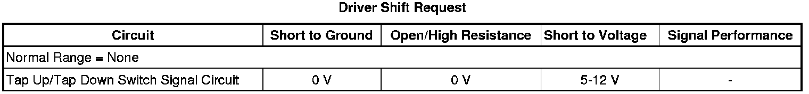

6L50 / 6L80 / 6L90 Automatic Transmission
DTC P0815, P0816, P0826, or P1876
Diagnostic Instructions
* Perform the Diagnostic System Check - Vehicle (Initial Inspection and Diagnostic Overview) prior to using this diagnostic procedure.
* Review Strategy Based Diagnosis (Initial Inspection and Diagnostic Overview) for an overview of the diagnostic approach.
* Diagnostic Procedure Instructions (Initial Inspection and Diagnostic Overview) provides an overview of each diagnostic category.
DTC Descriptors
DTC P0815
- Upshift Switch Circuit
DTC P0816
- Downshift Switch Circuit
DTC P0826
- Up and Down Shift Switch Circuit
DTC P1876
- Up and Down Shift Enable Switch Circuit Low Voltage
Diagnostic Fault Information

Circuit/System Description
The TAP Shift/Driver Shift Control (DSC) allows the driver to shift gears by using the TAP switches located on the automatic transmission shifter. Pushing forward on the shifter will command an upshift and pulling back will command a downshift. Ignition voltage flows from the ignition 3 fuse through the TAP Switch resistor array to the Transmission Control Module (TCM). The TAP system is activated when the gear shift lever is in the D position and moved over into the DSC gate area. When the shifter is moved over into the DSC gate area, the TAP enable switch is closed and completes the TAP enable circuit from the Body Control Module (BCM) to ground.
Conditions for Running the DTC
P0815 or P0816
* No DTC P0826.
* No DTCs P1825 or P1915.
* The engine speed is between 500-7,500 rpm for at least 5 seconds.
* The time since the last gear selector range change is greater than 6 seconds.
P0826
* Ignition voltage is 8.6-19.0 volts.
* Engine speed is 500-6,500 rpm for at least 5 seconds.
P1876
* The following DTCs are not Fault Active or Test Fail this Key ON:
- DTC U0100.
- DTCs P0815, P0816, or P0826.
- DTCs P1825 or P1915.
* Ignition voltage is 8.6-19.0 volts.
* Engine speed is 500-6,500 RPM for at least 5 seconds.
Conditions for Setting the DTC
P0815
The TCM detects a Stuck ON upshift switch for 3 seconds in PARK, REVERSE, NEUTRAL, or D and for 600 seconds in PARK, REVERSE, NEUTRAL, OR D.
P0816
The TCM detects a Stuck ON downshift switch for 3 seconds in PARK, REVERSE, NEUTRAL, or D and for 600 seconds in PARK, REVERSE, NEUTRAL, or D.
P0826
The TCM detects an invalid voltage on the TAP Up/Down Signal Circuit for 8 seconds.
P1876
The TCM detects a TAP Enable Switch request 3 times when not in D6 range for 2 seconds.
Action Taken When the DTC Sets
* DTCs P0815, P0816, P0826, and P1876 are Type C DTCs.
* The TCM disables TAP shift functions.
Conditions for Clearing the DTC
DTCs P0815, P0816, P0826, and P1876 are Type C DTCs.
Reference Information
Schematic Reference
Automatic Transmission Controls Schematics (Electrical Diagrams)
Connector End View Reference
Component Connector End Views (Connector Views)
Electrical Information Reference
* Circuit Testing (Component Tests and General Diagnostics)
* Connector Repairs (Component Tests and General Diagnostics)
* Testing for Intermittent Conditions and Poor Connections (Component Tests and General Diagnostics)
* Wiring Repairs (Component Tests and General Diagnostics)
DTC Type Reference
Powertrain Diagnostic Trouble Code (DTC) Type Definitions (Diagnostic Trouble Code Descriptions)
Scan Tool Reference
Control Module References (Programming and Relearning) for scan tool information
Circuit/System Verification
P0815, P0816, or P0826
With the engine ON, engage the Tap Up and Tap Down switch positions while observing the Driver Shift Request scan tool parameter. The parameter should change to reflect the selected Up or Downshift switch position and with no Up or Downshift switch position selected the parameter should display None.
If the parameter does not change to reflect the selected position, proceed to Circuit/System Testing.
P1876
With the engine ON, move the transmission range selector from the Park (P) range to the Drive (D6) range and over into the DSC gate while observing the Tap Up/Down Enable parameter on the scan tool in Body and Accessories/Instrument Panel scan tool data list. The parameter should display Enabled when in the DSC gate area, and Disabled in all other ranges.
If the parameter does not change when the transmission range selector is in the DSC gate, proceed to Circuit/System Testing.
Circuit/System Testing
P0815
1. Select the Driver Shift Request parameter.
2. Disconnect the Automatic Transmission (AT) shift program switch connector.
• If the parameter status changes from Upshift to Invalid, replace the AT shift program switch.
• If the parameter status does not change, replace the control solenoid (w/body and TCM) valve assembly.
P0816
1. Select the Driver Shift Request parameter.
2. Disconnect the Automatic Transmission (AT) shift program switch connector.
• If the parameter status changes from Downshift to Invalid, replace the AT shift program switch.
• If the parameter status does not change, replace the control solenoid (w/body and TCM) valve assembly.
P0826
1. Inspect the fuse in the ignition 3 voltage circuit for an open.
• If the fuse is Open, test the ignition 3 and the Tap/Up and Tap/down circuit for a short to ground.
• If the fuse is OK, test the ignition 3 and the Tap/Up and Tap/down signal circuit for an Open or Short to Voltage.
2. Test the AT/DSC shift program switch for correct resistance value, 8.11-8.39 ohms.
• If the resistance is not within specifications, replace the switch assembly.
• If the resistance is within specifications, replace the control solenoid (w/body and TCM) valve assembly.
P1876
Key On, engine Off, in PARK, disconnect the Tap Up/Tap Down Enable Switch connector from the switch. Using a scan tool, observe the Tap Up/Down Enable parameter in Body and Accessories/Instrument Panel scan tool data list. The parameter should display Disabled.
If the parameter does not display Disabled while disconnected, test the Tap Up/Tap Down Enable signal circuit for a short to ground. If no short to ground is found, replace the BCM.
If the parameter displays Disabled when disconnected and Enabled when connected, ensure the mechanical enable switch linkage is not bent, binding, or damaged and if no concerns are found, replace the Tap Up/Tap Down Enable switch.
If the parameter displays Disabled at all times, test the Tap Up/Tap Down ground circuit for an open or short to voltage.
Repair Instructions
Perform the Diagnostic Repair Verification (Verification Tests) after completing the diagnostic procedure.
* Replace the AT shift program switch. Refer to Transmission Control Replacement (Left Hand Drive) (Transmission Control Replacement (Left Hand Drive))Transmission Control Replacement (Right Hand Drive) (Transmission Control Replacement (Right Hand Drive)) .
* Replace the control solenoid (w/body and TCM) valve assembly. Refer to Control Module References (Programming and Relearning) for replacement, setup, and programming.